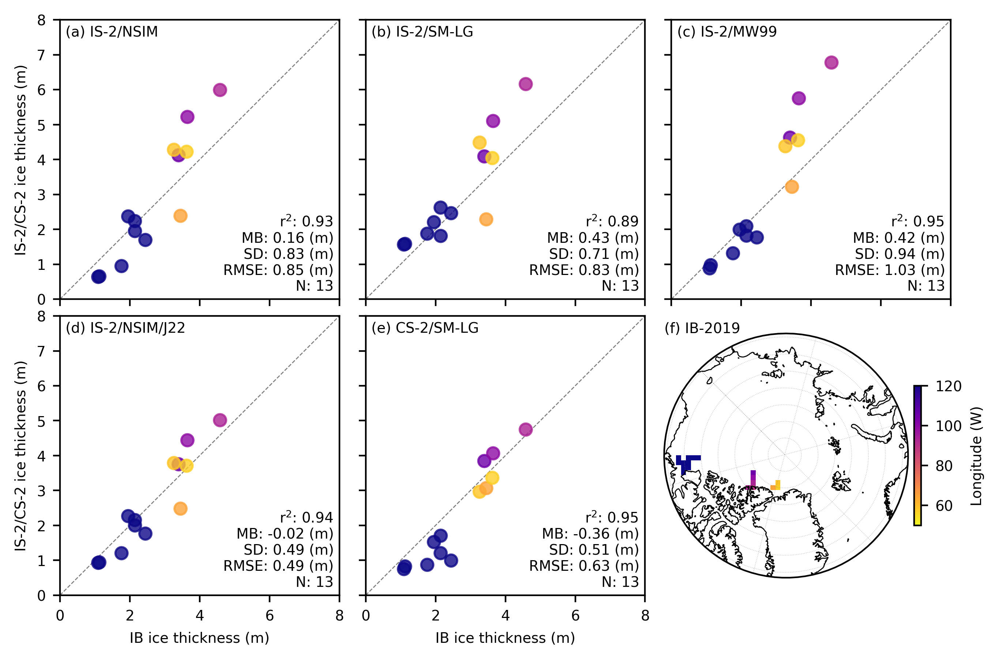
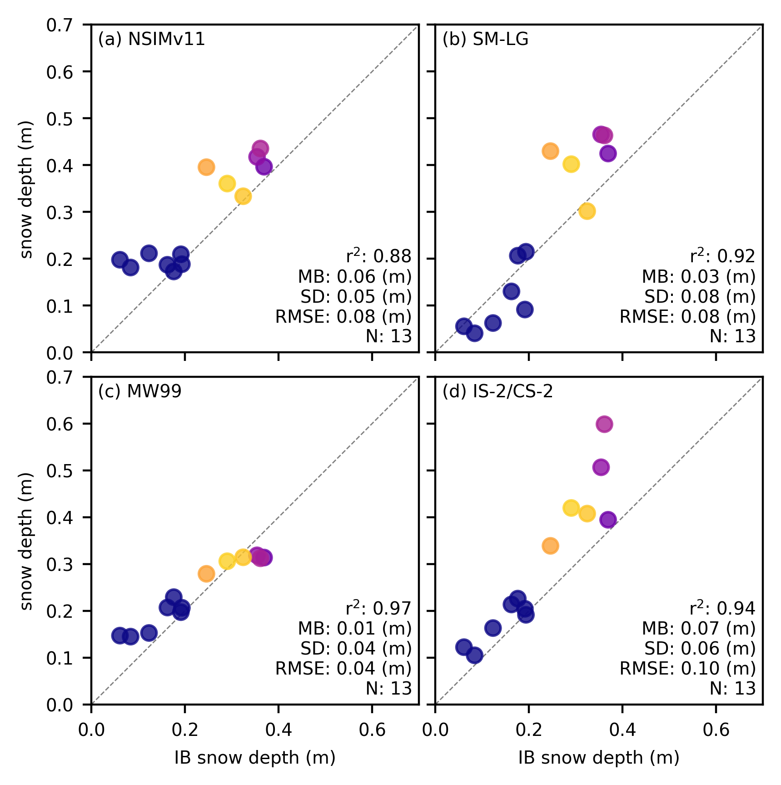

Comparisons with AWI IceBird 2019#
Summary: In this notebook, we produce comparisons of winter ICESat-2 and CryoSat-2 sea ice thickness data with snow depth and sea ice thickness data from the airborne IceBird 2019 campaign.
Version history: Version 1 (05/01/2025)
Import notebook dependencies#
import xarray as xr
import pandas as pd
import numpy as np
import itertools
import pyproj
from netCDF4 import Dataset
import scipy.interpolate
from utils.read_data_utils import read_book_data, read_IS2SITMOGR4 # Helper function for reading the data from the bucket
from utils.plotting_utils import compute_gridcell_winter_means, interactiveArcticMaps, interactive_winter_mean_maps, interactive_winter_comparison_lineplot # Plotting
from utils.extra_funcs import apply_interpolation_timestep
from scipy import stats
import datetime
# Plotting dependencies
import cartopy.crs as ccrs
from textwrap import wrap
import hvplot.pandas
import holoviews as hv
import matplotlib.pyplot as plt
from matplotlib.axes import Axes
from cartopy.mpl.geoaxes import GeoAxes
GeoAxes._pcolormesh_patched = Axes.pcolormesh # Helps avoid some weird issues with the polar projection
%config InlineBackend.figure_format = 'retina'
import matplotlib as mpl
# Interpolating/smoothing packages
from scipy.interpolate import griddata
from scipy.spatial import KDTree
from astropy.convolution import convolve
from astropy.convolution import Gaussian2DKernel
mpl.rcParams['figure.dpi'] = 200 # Sets figure size in the notebook
# Remove warnings to improve display
import warnings
warnings.filterwarnings('ignore')
mpl.rcParams.update({
"font.size": 7, # Match typical LaTeX 10pt font
"axes.labelsize": 7,
"xtick.labelsize": 7,
"ytick.labelsize": 7,
"legend.fontsize": 7
})
grid_size=100
ib_agg_str='mean'
int_str='_int'
# Define the variables to compare
variables_ice = [
'ice_thickness'+int_str,
'ice_thickness_sm'+int_str,
'ice_thickness_mw99'+int_str,
'ice_thickness_j22'+int_str,
'ice_thickness_cs2_ubris'
]
# Define the variables to compare
variables_snow = [
'snow_depth'+int_str,
'snow_depth_sm'+int_str,
'snow_depth_mw99'+int_str,
'cs2is2_snow_depth'
]
variables_all = variables_ice+variables_snow
# Load the all-season wrangled dataset
IS2SITMOGR4_v3 = xr.open_dataset('./data/book_data_allseason.nc')
print("Successfully loaded all-season wrangled dataset")
Successfully loaded all-season wrangled dataset
out_proj = 'EPSG:3411'
out_lons = IS2SITMOGR4_v3.longitude.values
out_lats = IS2SITMOGR4_v3.latitude.values
mapProj = pyproj.Proj("+init=" + out_proj)
xptsIS2, yptsIS2 = mapProj(out_lons, out_lats)
# Just select April as that's all we use here
IS2SITMOGR4_v3 = IS2SITMOGR4_v3.sel(time='2019-04-15')
# COARSEN TO MATCH 100 KM RESOLUTION OF IB
if grid_size==100:
# First count valid values in each block
valid_counts = IS2SITMOGR4_v3.notnull().coarsen(y=4, x=4, boundary='trim').sum()
# Calculate means
means = IS2SITMOGR4_v3.coarsen(y=4, x=4, boundary='trim').mean()
# Mask means where count is less than minimum
IS2SITMOGR4_v3 = means.where(valid_counts >= 4)
IS2SITMOGR4_v3
<xarray.Dataset>
Dimensions: (y: 112, x: 76)
Coordinates:
time datetime64[ns] 2019-04-15
* x (x) float32 -3.8e+06 -3.7e+06 ... 3.7e+06
* y (y) float32 5.8e+06 5.7e+06 ... -5.3e+06
longitude (y, x) float32 168.2 167.5 ... -10.81 -10.08
latitude (y, x) float32 31.47 31.85 ... 35.27 34.85
Data variables: (12/47)
crs float64 nan
ice_thickness_sm (y, x) float32 nan nan nan ... nan nan nan
ice_thickness_unc (y, x) float32 nan nan nan ... nan nan nan
num_segments (y, x) float32 nan nan nan ... nan nan nan
mean_day_of_month (y, x) float32 nan nan nan ... nan nan nan
snow_depth_sm (y, x) float32 nan nan nan ... nan nan nan
... ...
ice_density_j22_int (y, x) float32 nan nan nan ... nan nan nan
ice_thickness_j22_int (y, x) float32 nan nan nan ... nan nan nan
ice_thickness_cs2_ubris (y, x) float64 0.0 0.0 0.0 ... 0.0 0.0 0.0
cs2_sea_ice_type_UBRIS (y, x) float64 nan nan nan ... nan nan nan
cs2_sea_ice_density_UBRIS (y, x) float64 nan nan nan ... nan nan nan
cs2is2_snow_depth (y, x) float64 nan nan nan ... nan nan nan
Attributes:
contact: Alek Petty (akpetty@umd.edu)
description: Aggregated IS2SITMOGR4 summer V0 dataset.
history: Created 20/12/23# Mask data where the CS-2 thickness data is nan to make comps fair/same grid-cells
IS2SITMOGR4_v3 = IS2SITMOGR4_v3.where(~np.isnan(IS2SITMOGR4_v3.ice_thickness_cs2_ubris))
# Open the IB NetCDF file
file_path = '/Users/akpetty/Data/IS2-obs-comparison-data/icebird_on_is2_grid_'+str(grid_size)+'km_test1.nc'
dataset = xr.open_dataset(file_path)
dataset = dataset.rename({'date': 'time'})
dataset = dataset.transpose('y', 'x', 'time')
print(dataset)
<xarray.Dataset>
Dimensions: (x: 76, y: 112, time: 5)
Coordinates:
lon (y, x) float64 ...
lat (y, x) float64 ...
* x (x) float64 -3.838e+06 -3.738e+06 ... 3.662e+06
* y (y) float64 5.838e+06 5.738e+06 ... -5.262e+06
* time (time) datetime64[ns] 2019-04-02 ... 2019-04-10
crs int32 ...
Data variables:
sea_ice_thickness_mean (y, x, time) float64 ...
sea_ice_thickness_median (y, x, time) float64 ...
sea_ice_thickness_mode (y, x, time) float64 ...
sea_ice_thickness_count (y, x, time) float64 ...
snow_thickness_mean (y, x, time) float64 ...
snow_thickness_median (y, x, time) float64 ...
snow_thickness_mode (y, x, time) float64 ...
snow_thickness_count (y, x, time) float64 ...
# Plot out the gridded IB data by day
fig_width=6.8
fig_height=5.4
im1 = dataset.sea_ice_thickness_mean.plot(x="lon", y="lat", col='time', transform=ccrs.PlateCarree(),
cmap="viridis", zorder=3, add_labels=False,
subplot_kws={'projection':ccrs.NorthPolarStereo(central_longitude=-45)},
cbar_kwargs={'pad':0.01,'shrink': 0.3,'extend':'both',
'label':'Sea ice thickness (m)', 'location':'bottom'},
vmin=0, vmax=5,
figsize=(fig_width, fig_height))
# Add map features to all subplots
i=0
for i, ax in enumerate(im1.axes.flatten()):
ax.coastlines(linewidth=0.15, color='black', zorder=2)
#ax.add_feature(cfeature.LAND, color='0.95', zorder=1)
ax.gridlines(draw_labels=False, linewidth=0.25, color='gray', alpha=0.7, linestyle='--', zorder=3)
ax.set_extent([-179, 179, 65, 90], crs=ccrs.PlateCarree())
#ax.text(0.02, 0.93, panel_letters[i], transform=ax.transAxes, fontsize=7, va='bottom', ha='left')
#ax.set_title('', fontsize=8)
i+=1
#plt.subplots_adjust(wspace=0.01)
#plt.savefig('./figs/maps_summer_thickness_comparison.png', dpi=300, facecolor="white")
plt.show()
plt.close()
{kind=link}
# Plot out the gridded IB data by campaign
fig_width=3.4
fig_height=2.7
im1 = dataset.sea_ice_thickness_mean.mean(dim='time').plot(x="lon", y="lat", transform=ccrs.PlateCarree(),
cmap="viridis", zorder=3, add_labels=False,
subplot_kws={'projection':ccrs.NorthPolarStereo(central_longitude=-45)},
cbar_kwargs={'pad':0.01,'shrink': 0.3,'extend':'both',
'label':'Sea ice thickness (m)', 'location':'bottom'},
vmin=0, vmax=5,
figsize=(fig_width, fig_height))
# Add map features to the single subplot
ax = im1.axes # Access the single axis object
ax.coastlines(linewidth=0.15, color='black', zorder=2)
ax.gridlines(draw_labels=False, linewidth=0.25, color='gray', alpha=0.7, linestyle='--', zorder=3)
ax.set_extent([-179, 179, 65, 90], crs=ccrs.PlateCarree())
#plt.subplots_adjust(wspace=0.01)
plt.savefig('./figs/IBmap_all'+str(grid_size)+'km.png', dpi=300, facecolor="white")
plt.show()
plt.close()
{kind=link}
# Initialize a dictionary to store validation results
validation_results = {}
# Calculate statistics and generate scatter plots for each variable
for var in variables_ice:
# Calculate statistics
IS2_var = IS2SITMOGR4_v3[var]
IB_var = dataset['sea_ice_thickness_'+ib_agg_str].mean(dim='time')
IB_lon = dataset['lon']
valid_mask = ~np.isnan(IS2_var.values) & ~np.isnan(IB_var.values)
IB_comps=IB_var.where(valid_mask).values.flatten()[~np.isnan(IB_var.where(valid_mask).values.flatten())]
IB_lon=IB_lon.where(valid_mask).values.flatten()[~np.isnan(IB_var.where(valid_mask).values.flatten())]*-1.
IS2_comps=IS2_var.where(valid_mask).values.flatten()[~np.isnan(IS2_var.where(valid_mask).values.flatten())]
# Correlation Coeff
correlation = '%.02f' % (np.corrcoef(IS2_comps, IB_comps)[0, 1])
# Calculate mean bias
mean_bias = '%.02f' % (np.mean(IS2_comps - IB_comps))
# Calculate standard dev of differences
std_dev = '%.02f' % (np.std(IS2_comps - IB_comps))
# Calculate RMSE
rmse = '%.02f' % (np.sqrt(np.mean((IS2_comps - IB_comps) ** 2)))
# Store results
validation_results[var] = {
'r_str': correlation, 'mb_str': mean_bias, 'sd_str': std_dev,
'rmse': rmse, 'IB_comps': IB_comps, 'IS2_comps': IS2_comps,
'IB_lon': IB_lon
}
# Print validation results
print(validation_results)
{'ice_thickness_int': {'r_str': '0.93', 'mb_str': '0.16', 'sd_str': '0.83', 'rmse': '0.85', 'IB_comps': array([1.09604872, 2.14618237, 1.95420074, 2.14831064, 1.12813711,
1.76287681, 2.44654497, 3.39757853, 3.64979042, 4.58394392,
3.2632371 , 3.45273987, 3.62678507]), 'IS2_comps': array([0.63818747, 2.2361875 , 2.3706875 , 1.9508749 , 0.65368754,
0.94862497, 1.6961875 , 4.1224375 , 5.2204614 , 5.9924164 ,
4.2799377 , 2.388 , 4.2235003 ], dtype=float32), 'IB_lon': array([133.32516201, 133.15238973, 133.05191499, 132.93988898,
130.65254309, 130.44004991, 130.20576793, 105.37625125,
99.0394828 , 93.57633437, 58.73626831, 64.72227776,
56.72511202])}, 'ice_thickness_sm_int': {'r_str': '0.89', 'mb_str': '0.43', 'sd_str': '0.71', 'rmse': '0.83', 'IB_comps': array([1.09604872, 2.14618237, 1.95420074, 2.14831064, 1.12813711,
1.76287681, 2.44654497, 3.39757853, 3.64979042, 4.58394392,
3.2632371 , 3.45273987, 3.62678507]), 'IS2_comps': array([1.5649941, 2.6231587, 2.2053032, 1.8119311, 1.5832556, 1.8761823,
2.4635205, 4.0895667, 5.104027 , 6.1614385, 4.485904 , 2.2869654,
4.0424843], dtype=float32), 'IB_lon': array([133.32516201, 133.15238973, 133.05191499, 132.93988898,
130.65254309, 130.44004991, 130.20576793, 105.37625125,
99.0394828 , 93.57633437, 58.73626831, 64.72227776,
56.72511202])}, 'ice_thickness_mw99_int': {'r_str': '0.95', 'mb_str': '0.42', 'sd_str': '0.94', 'rmse': '1.03', 'IB_comps': array([1.09604872, 2.14618237, 1.95420074, 2.14831064, 1.12813711,
1.76287681, 2.44654497, 3.39757853, 3.64979042, 4.58394392,
3.2632371 , 3.45273987, 3.62678507]), 'IS2_comps': array([0.8828837 , 2.0888524 , 1.9913417 , 1.8197478 , 0.97362405,
1.3150415 , 1.7687227 , 4.62767 , 5.753122 , 6.7776694 ,
4.3807406 , 3.2187722 , 4.552506 ], dtype=float32), 'IB_lon': array([133.32516201, 133.15238973, 133.05191499, 132.93988898,
130.65254309, 130.44004991, 130.20576793, 105.37625125,
99.0394828 , 93.57633437, 58.73626831, 64.72227776,
56.72511202])}, 'ice_thickness_j22_int': {'r_str': '0.94', 'mb_str': '-0.02', 'sd_str': '0.49', 'rmse': '0.49', 'IB_comps': array([1.09604872, 2.14618237, 1.95420074, 2.14831064, 1.12813711,
1.76287681, 2.44654497, 3.39757853, 3.64979042, 4.58394392,
3.2632371 , 3.45273987, 3.62678507]), 'IS2_comps': array([0.9281136 , 2.1541429 , 2.2666247 , 1.998168 , 0.94198966,
1.204484 , 1.7656053 , 3.7516086 , 4.4391646 , 5.0143547 ,
3.786828 , 2.4805026 , 3.70973 ], dtype=float32), 'IB_lon': array([133.32516201, 133.15238973, 133.05191499, 132.93988898,
130.65254309, 130.44004991, 130.20576793, 105.37625125,
99.0394828 , 93.57633437, 58.73626831, 64.72227776,
56.72511202])}, 'ice_thickness_cs2_ubris': {'r_str': '0.95', 'mb_str': '-0.36', 'sd_str': '0.51', 'rmse': '0.63', 'IB_comps': array([1.09604872, 2.14618237, 1.95420074, 2.14831064, 1.12813711,
1.76287681, 2.44654497, 3.39757853, 3.64979042, 4.58394392,
3.2632371 , 3.45273987, 3.62678507]), 'IS2_comps': array([0.74958284, 1.20660795, 1.52454121, 1.70514146, 0.82495694,
0.87163874, 0.99319798, 3.84476153, 4.06456063, 4.74533455,
2.96440914, 3.06830738, 3.36380735]), 'IB_lon': array([133.32516201, 133.15238973, 133.05191499, 132.93988898,
130.65254309, 130.44004991, 130.20576793, 105.37625125,
99.0394828 , 93.57633437, 58.73626831, 64.72227776,
56.72511202])}}
fig = plt.figure(figsize=(6.8, 6.8*0.65))
gs = fig.add_gridspec(2, 3, hspace=0.06, wspace=0.04)
axes = []
for i in range(2):
for j in range(3):
if i == 1 and j == 2:
# Create the cartopy map in the third position
ax = fig.add_subplot(gs[i, j], projection=ccrs.NorthPolarStereo(central_longitude=-45))
else:
ax = fig.add_subplot(gs[i, j])
axes.append(ax)
panel_labels = ['(a) IS-2/NSIM', '(b) IS-2/SM-LG', '(c) IS-2/MW99', '(d) IS-2/NSIM/J22', '(e) CS-2/SM-LG', '(f) IB-2019']
#panel_labels = ['(a)', '(b)', '(c)', '(d)', '(e)', '(f)'] # Panel labels
# Configure the cartopy map in the third subplot
map_ax = axes[5]
map_ax.set_extent([-180, 180, 68, 90], crs=ccrs.PlateCarree())
map_ax.coastlines(resolution='50m', color='black', linewidth=0.5)
map_ax.gridlines(draw_labels=False, linewidth=0.3, color='gray', alpha=0.5, linestyle=':')
# Add a circular boundary for the polar plot
theta = np.linspace(0, 2*np.pi, 100)
center, radius = [0.5, 0.5], 0.5
verts = np.vstack([np.sin(theta), np.cos(theta)]).T
circle = mpl.path.Path(verts * radius + center)
map_ax.set_boundary(circle, transform=map_ax.transAxes)
# Plot IceBird flight tracks or data locations
# Example: Plot the locations of the IceBird measurements
im = map_ax.pcolormesh(
dataset.x,
dataset.y,
-1.*dataset.lon.where(np.isfinite(dataset.sea_ice_thickness_mean.mean(dim='time'))),
transform=ccrs.NorthPolarStereo(central_longitude=-45),
cmap='plasma_r',
vmin=50,
vmax=120 # Adjust the range as needed
)
cbar = plt.colorbar(im, ax=map_ax, orientation='vertical', pad=0.02, shrink=0.5)
cbar.set_label('Longitude (W)', fontsize=7)
# Add panel label
map_ax.annotate(f"{panel_labels[5]}", xy=(0.0, 0.99),
xycoords='axes fraction',
horizontalalignment='left',
verticalalignment='bottom')
# Process the other subplots as before
for i, option in enumerate(variables_ice):
ax_idx = i
ax = axes[ax_idx]
im = ax.scatter(validation_results[option]['IB_comps'], validation_results[option]['IS2_comps'],
c=validation_results[option]['IB_lon'], alpha=0.8, cmap='plasma_r', vmin=50, vmax=120)
# Retrieve validation results for the current option
r_str = validation_results[option]['r_str']
mb_str = validation_results[option]['mb_str']
sd_str = validation_results[option]['sd_str']
n_str = str(len(validation_results[option]['IS2_comps']))
# Calculate RMSE for each ULS
rmse = validation_results[option]['rmse']
# Annotate the plot with statistics
ax.annotate(f"r$^2$: {r_str} \nMB: {mb_str} (m)\nSD: {sd_str} (m)\nRMSE: {rmse} (m)\nN: {n_str}",
color='k', xy=(0.98, 0.02), xycoords='axes fraction',
horizontalalignment='right', verticalalignment='bottom', fontsize=7)
# Combine panel label with option label
ax.annotate(f"{panel_labels[ax_idx]} ", xy=(0.02, 0.98),
xycoords='axes fraction', horizontalalignment='left', verticalalignment='top')
# Set x and y labels only for the leftmost and bottom plots
if (ax_idx == 0):
ax.legend(frameon=False, loc="upper right")
if (ax_idx == 0) or (ax_idx == 3):
ax.set_ylabel('IS-2/CS-2 ice thickness (m)')
else:
ax.set_yticklabels('')
if ax_idx >= 3:
ax.set_xlabel('IB ice thickness (m)')
else:
ax.set_xlabel('')
ax.set_xticklabels('')
ax.set_xlim([0, 8])
ax.set_ylim([0, 8])
lims = [
np.min([ax.get_xlim(), ax.get_ylim()]), # min of both axes
np.max([ax.get_xlim(), ax.get_ylim()]), # max of both axes
]
ax.plot(lims, lims, 'k--', linewidth=0.5, alpha=0.5, zorder=0)
ax.set_aspect('equal')
ax.set_xlim(lims)
ax.set_ylim(lims)
plt.subplots_adjust(left=0.05, right=0.96, top=0.98, bottom=0.09) # Adjust these values to reduce whitespace
plt.savefig('./figs/IB_scatter_inccs2_'+ib_agg_str+'_'+int_str+'_'+str(grid_size)+'km.pdf', dpi=300)
plt.show()
No artists with labels found to put in legend. Note that artists whose label start with an underscore are ignored when legend() is called with no argument.
{kind=link}

# Initialize a dictionary to store validation results
validation_results_snow = {}
# Calculate statistics and generate scatter plots for each variable
for var in variables_snow:
# Calculate statistics
print(var)
IS2_var = IS2SITMOGR4_v3[var]
IB_var = dataset['snow_thickness_'+ib_agg_str].mean(dim='time')
IB_lon = dataset['lon']
valid_mask = ~np.isnan(IS2_var.values) & ~np.isnan(IB_var.values)
IB_lon=IB_lon.where(valid_mask).values.flatten()[~np.isnan(IB_var.where(valid_mask).values.flatten())]*-1.
IB_comps=IB_var.where(valid_mask).values.flatten()[~np.isnan(IB_var.where(valid_mask).values.flatten())]
IS2_comps=IS2_var.where(valid_mask).values.flatten()[~np.isnan(IS2_var.where(valid_mask).values.flatten())]
# Correlation Coeff
correlation = '%.02f' % (np.corrcoef(IS2_comps, IB_comps)[0, 1])
# Calculate mean bias
mean_bias = '%.02f' % (np.mean(IS2_comps - IB_comps))
# Calculate standard dev of differences
std_dev = '%.02f' % (np.std(IS2_comps - IB_comps))
# Calculate RMSE
rmse = '%.02f' % (np.sqrt(np.mean((IS2_comps - IB_comps) ** 2)))
# Store results
validation_results_snow[var] = {
'r_str': correlation, 'mb_str': mean_bias, 'sd_str': std_dev, 'rmse': rmse,
'IB_comps': IB_comps, 'IS2_comps': IS2_comps, 'IB_lon': IB_lon
}
# Print validation results
print(validation_results_snow)
snow_depth_int
snow_depth_sm_int
snow_depth_mw99_int
cs2is2_snow_depth
{'snow_depth_int': {'r_str': '0.88', 'mb_str': '0.06', 'sd_str': '0.05', 'rmse': '0.08', 'IB_comps': array([0.08393886, 0.162617 , 0.1761535 , 0.19351885, 0.0611693 ,
0.12320611, 0.19135242, 0.36910769, 0.35409994, 0.36129619,
0.32445472, 0.24597048, 0.29041957]), 'IS2_comps': array([0.1814375 , 0.18725 , 0.17300001, 0.1885 , 0.198 ,
0.21175002, 0.2096875 , 0.39662498, 0.41761538, 0.43558335,
0.33362502, 0.3956875 , 0.3606875 ], dtype=float32), 'IB_lon': array([133.32516201, 133.15238973, 133.05191499, 132.93988898,
130.65254309, 130.44004991, 130.20576793, 105.37625125,
99.0394828 , 93.57633437, 58.73626831, 64.72227776,
56.72511202])}, 'snow_depth_sm_int': {'r_str': '0.92', 'mb_str': '0.03', 'sd_str': '0.08', 'rmse': '0.08', 'IB_comps': array([0.08393886, 0.162617 , 0.1761535 , 0.19351885, 0.0611693 ,
0.12320611, 0.19135242, 0.36910769, 0.35409994, 0.36129619,
0.32445472, 0.24597048, 0.29041957]), 'IS2_comps': array([0.0409667 , 0.13039431, 0.20668766, 0.2150569 , 0.05585374,
0.0628622 , 0.09170049, 0.42484725, 0.4655643 , 0.4634935 ,
0.30179456, 0.42997122, 0.4020841 ], dtype=float32), 'IB_lon': array([133.32516201, 133.15238973, 133.05191499, 132.93988898,
130.65254309, 130.44004991, 130.20576793, 105.37625125,
99.0394828 , 93.57633437, 58.73626831, 64.72227776,
56.72511202])}, 'snow_depth_mw99_int': {'r_str': '0.97', 'mb_str': '0.01', 'sd_str': '0.04', 'rmse': '0.04', 'IB_comps': array([0.08393886, 0.162617 , 0.1761535 , 0.19351885, 0.0611693 ,
0.12320611, 0.19135242, 0.36910769, 0.35409994, 0.36129619,
0.32445472, 0.24597048, 0.29041957]), 'IS2_comps': array([0.14488095, 0.20705044, 0.2292242 , 0.20656173, 0.1470834 ,
0.15273586, 0.19715095, 0.31377053, 0.31855926, 0.31224295,
0.31434673, 0.27906984, 0.3059355 ], dtype=float32), 'IB_lon': array([133.32516201, 133.15238973, 133.05191499, 132.93988898,
130.65254309, 130.44004991, 130.20576793, 105.37625125,
99.0394828 , 93.57633437, 58.73626831, 64.72227776,
56.72511202])}, 'cs2is2_snow_depth': {'r_str': '0.94', 'mb_str': '0.07', 'sd_str': '0.06', 'rmse': '0.10', 'IB_comps': array([0.08393886, 0.162617 , 0.1761535 , 0.19351885, 0.0611693 ,
0.12320611, 0.19135242, 0.36910769, 0.35409994, 0.36129619,
0.32445472, 0.24597048, 0.29041957]), 'IS2_comps': array([0.10501599, 0.21358687, 0.22609126, 0.19152774, 0.12240227,
0.16321033, 0.20434999, 0.39448062, 0.50653889, 0.59848407,
0.40762571, 0.33877322, 0.41966513]), 'IB_lon': array([133.32516201, 133.15238973, 133.05191499, 132.93988898,
130.65254309, 130.44004991, 130.20576793, 105.37625125,
99.0394828 , 93.57633437, 58.73626831, 64.72227776,
56.72511202])}}
# Plot snow
snow_labels=['NSIMv11', 'SM-LG', 'MW99', 'IS-2/CS-2'] # Added fourth label
panel_labels = ['(a)', '(b)', '(c)', '(d)'] # Updated panel labels
fig, axes = plt.subplots(2, 2, figsize=(4.2, 4.2), gridspec_kw={'hspace': 0.05, 'wspace': 0.05}) # Changed to 2x2
axes = axes.flatten() # Flatten the 2D array of axes for easy iteration
for i, option in enumerate(variables_snow):
print(option)
ax = axes[i]
ax.scatter(validation_results_snow[option]['IB_comps'], validation_results_snow[option]['IS2_comps'], c=validation_results_snow[option]['IB_lon'], alpha=0.8, cmap='plasma_r', vmin=50, vmax=120)
# Retrieve validation results for the current option
r_str= validation_results_snow[option]['r_str']
mb_str = validation_results_snow[option]['mb_str']
sd_str = validation_results_snow[option]['sd_str']
n_str = str(len(validation_results_snow[option]['IS2_comps']))
# Calculate RMSE for each ULS
rmse = validation_results_snow[option]['rmse']
# Annotate the plot with RMSE, mean bias, and standard deviation
ax.annotate(f"r$^2$: {r_str} \nMB: {mb_str} (m)\nSD: {sd_str} (m)\nRMSE: {rmse} (m)\nN: {n_str}", color='k', xy=(0.98, 0.02), xycoords='axes fraction', horizontalalignment='right', verticalalignment='bottom', fontsize=7)
# Combine panel label with option label
ax.annotate(f"{panel_labels[i]} "+snow_labels[i], xy=(0.02, 0.98), xycoords='axes fraction', horizontalalignment='left', verticalalignment='top')
# Set x and y labels only for the leftmost and bottom plots
if (i==0):
ax.legend(frameon=False, loc="upper right")
if (i == 0 or i == 2): # Changed to show y-labels for left column
ax.set_ylabel('snow depth (m)')
else:
ax.set_yticklabels('')
if (i == 2 or i == 3): # Changed to show x-labels for bottom row
ax.set_xlabel('IB snow depth (m)')
else:
ax.set_xticklabels('')
ax.set_xlim([0, 0.7])
ax.set_ylim([0, 0.7])
lims = [
np.min([ax.get_xlim(), ax.get_ylim()]), # min of both axes
np.max([ax.get_xlim(), ax.get_ylim()]), # max of both axes
]
ax.plot(lims, lims, 'k--', linewidth=0.5, alpha=0.5, zorder=0)
ax.set_aspect('equal')
ax.set_xlim(lims)
ax.set_ylim(lims)
plt.subplots_adjust(left=0.1, right=0.98, top=0.98, bottom=0.08) # Adjust these values to reduce whitespace
plt.savefig('./figs/IB_4scatter_snow_inccs2_'+ib_agg_str+'_'+int_str+'_'+str(grid_size)+'km.pdf', dpi=300)
plt.show()
No artists with labels found to put in legend. Note that artists whose label start with an underscore are ignored when legend() is called with no argument.
snow_depth_int
snow_depth_sm_int
snow_depth_mw99_int
cs2is2_snow_depth
{kind=link}
